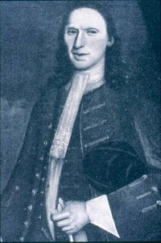

|
by Stefan Bielinski Pieter Waldron was born in New York in June 1675. He was the first of three sons born to the marriage of Willem and Engeltie Stoutenburgh Waldron. Raised in a cooper's home on Broad Street in New York City, he married Manhattan-born Catharina Vandenbergh in September 1698. After the birth of their first child in 1699, these Waldrons relocated to Albany. Over the next twenty-three years, nine more children were christened in the Albany Dutch church where both parents were frequent baptism sponsors. Identified as a mason when he was admitted to the freedom of New York City in 1698, upon moving to Albany, Pieter seems to have abandoned his trade and instead sought to compete in the Indian fur trade. In 1701, he was granted a license to trade in Albany. In 1709, his third ward home received a middling assessment. Over the next two decades, he achieved moderate success in business and as a contractor of the city. He sought acceptance within the Albany community - serving as a juror, constable, and firemaster for the third ward. In 1711, he was elected assistant alderman for the third ward. He was often called on to supervise repair work and also served as a surveyor. In 1715, he was identified as a private in the Albany militia company. In 1720, his name was included on a list of third ward freeholders. Just before his fiftieth birthday, Pieter Waldron died in 1725 and was buried from the Albany Dutch church. His marriage to Catharina Vandenbergh and success within the community economy established the Waldron family in Albany and in the region for decades to come.
Detail of a black-and-white copy of a portrait by an unknown artist. An inscription painted in a corner of the likeness reads "in the 46th year of his life" and "1720." In the collection of the Abby Aldrich Rockefeller Folk Art Museum, Williamsburg, Virginia. first posted 12/15/01; last revised 8/16/13 |